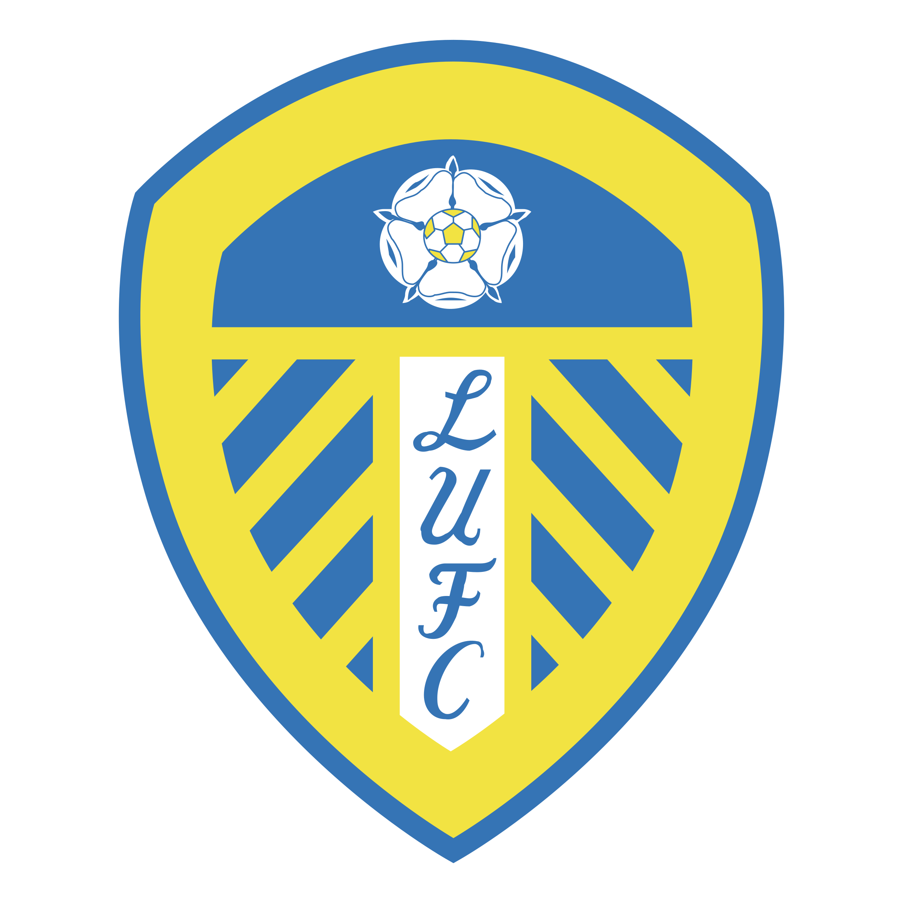
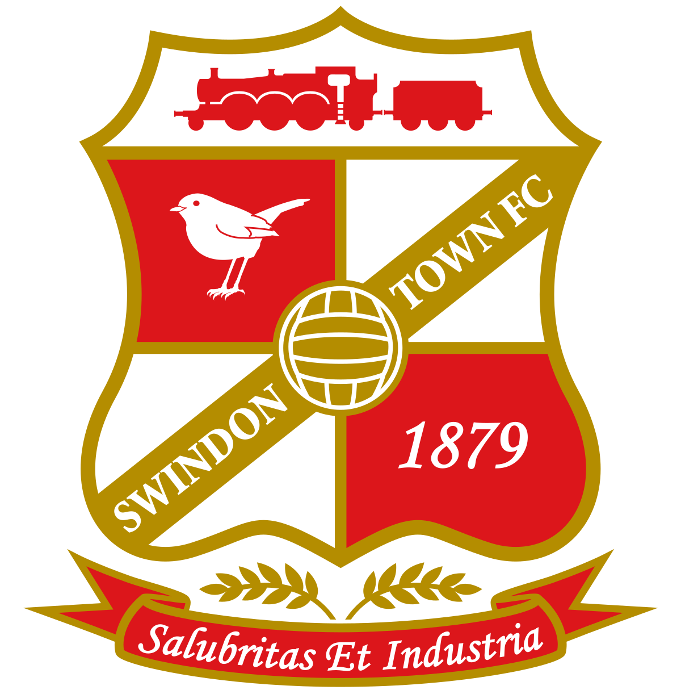
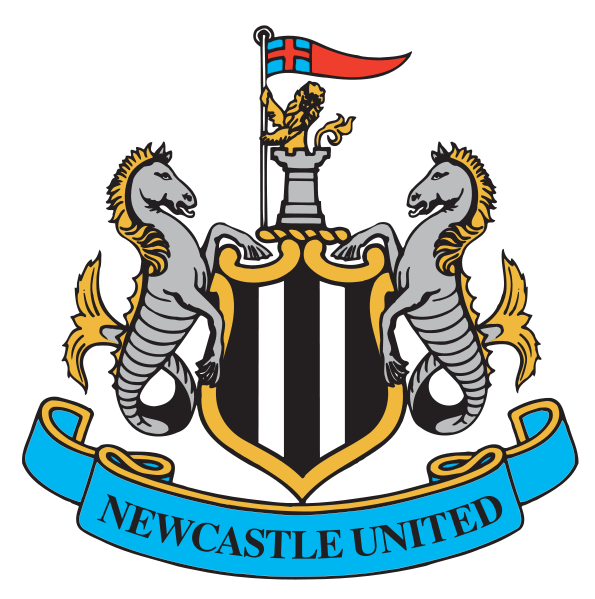
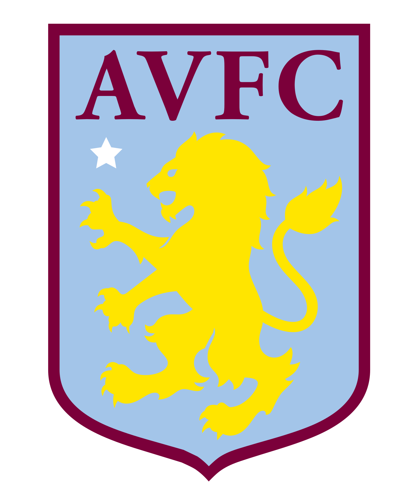
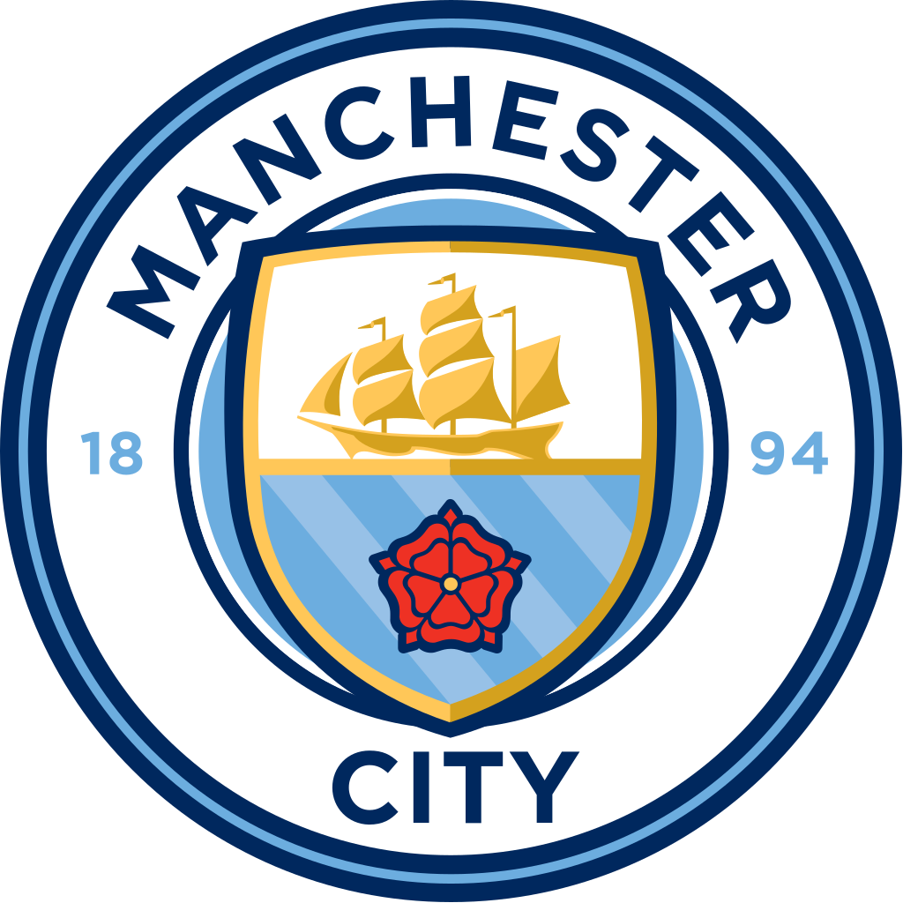
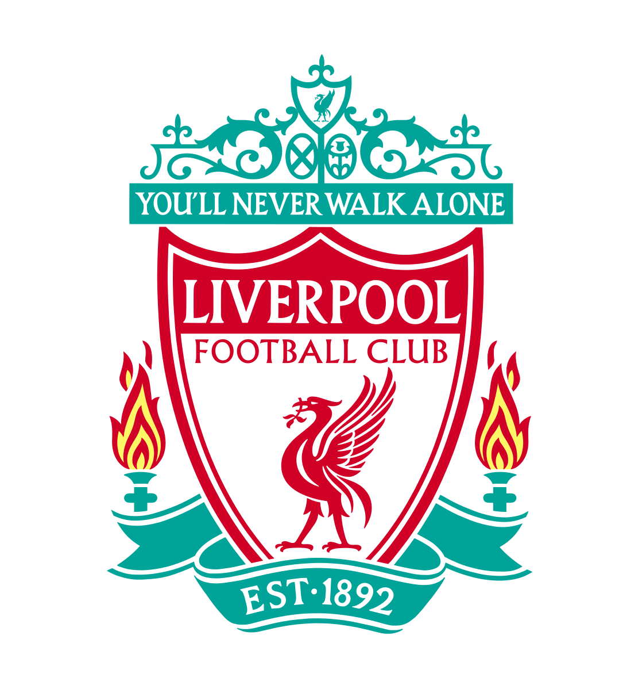

James Philip Milner
A Background
James Philip Milner (born 4 January 1986) is an English professional footballer who plays for Premier League club Liverpool. A versatile player, he has been used in many different positions such as on the wing, in midfield and at full-back. Milner is Liverpool's vice-captain.
Clubs

Leeds
'02 - '04

Swindon
'03

Newcastle
'04 - '08

Aston Villa
'05 - '06
Aston Villa
'08 - '10

Manchester City
'10 - '15
